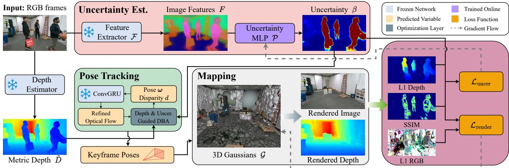
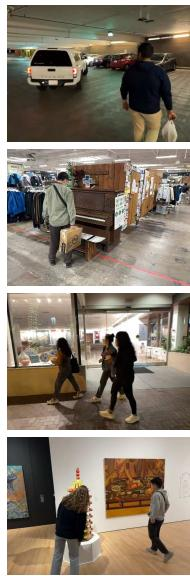
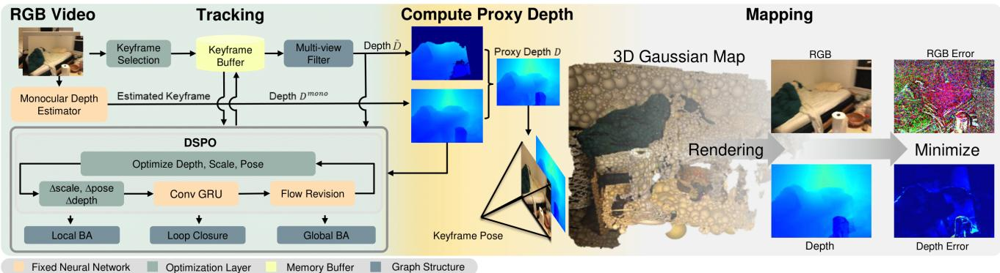
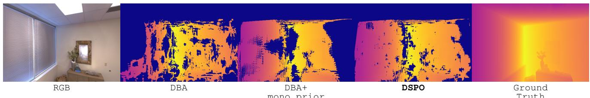

本节目标
读完你应该能：解释「特征不确定度」为什么能当作「这东西可能不是真的」的信号；说清 Splat-SLAM 的 Globally Optimized 与 RGB-only 分别指什么、DSPO 是什么；并且能对第一季 0010 留下的那句判断给出一个有依据的回答。
和前面课程怎么接
两篇都直接建立在 0117 MonoGS 之上——WildGS-SLAM 与 Splat-SLAM 都沿用 MonoGS 的 RGBD 插入策略来放新高斯。动态这条线接第三季 0068、第一季 0012 与本季 0114（DytanVO / RoDyn-SLAM / OVD-SLAM）；全局一致性这条线接第二季 0032（边缘化 = Schur 补）与第三季 0057 VINS-Mono 的选择性边缘化。而第一季 0010 的那句话，本课要正面对答。
1. 两篇论文，两个悬而未决的问题
这一课也是组课。两篇都是 2025 年最新的工作，放在一起读，是因为它们各自回答了本季前几课一直在回避的两个问题。
上一课 0120 的语义地图（以及第四季 0082 SuMa++ 用语义剔动态）都靠「先弄明白那是什么」。可如果那个东西是训练时没见过的类别呢？如果连深度传感器都没有呢？
WildGS-SLAM 的回答：不用知道那是什么，只要知道「这里我说不准」。
前四篇里，只有 0119 Photo-SLAM 有显式回环（而且是靠 ORB-SLAM3 的现成骨架）。0117 MonoGS 把回环写进了未来工作；0118 的 SplaTAM 与 GS-SLAM 干脆没提。
Splat-SLAM 的回答：能，但必须把回环和全局 BA 真正做出来，而且地图要能跟着位姿修正变形。
还有一个共同点很值得先点出来：两篇都沿用了 MonoGS（0117）的高斯插入策略。WildGS-SLAM 直接写「建图沿用 MonoGS 的 RGBD 插入策略」；Splat-SLAM 原话是「对每一帧新关键帧，我们对未见过的场景空间采用 MonoGS 的 RGBD 策略来加入新高斯」。也就是说，0117 那一课讲的高斯插入与裁剪机制，成了 2025 年这些工作的公共底座——这正是「读经典论文的价值」的一个具体例子。
2. WildGS-SLAM：用「我说不准」剔除动态
先把它的核心机制讲透。它只有三步，但每一步都很巧妙：
↓
② 用一个很浅的 MLP 把特征图解码成逐像素的不确定度 β（这个 MLP 是随着视频流在线训练的）
↓
③ 把 β 同时塞进跟踪（给稠密 BA 当权重）与建图（给渲染损失当权重）
关键在于第 ② 步的「为什么」：为什么「特征对不上」就等于「这东西不真」？
★ 为什么特征不确定度能起到这个作用
论文对不确定度 MLP 的损失里有这么一项：「让特征相似度高的地方，其预测不确定度的方差最小」（原文写作 $L_{\mathrm{reg\_V}}$，是它从 NeRF On-the-go 沿用来的三项正则之一）。这一项的含义是：特征几乎一样的地方，不确定度也应当差不多（偏低）；而特征在同一物体上却前后对不上的地方，不确定度就会被推高。
现在把这个规则套到动态物体上：一个走过的人，在相邻几帧里会出现在不同位置。虽然运动模糊与遮挡让「人身上那一块」在单帧里看起来还挺像人，但当系统把多帧放在一起比较时，会发现同一块区域的特征根本无法稳定对应——这正是不确定度会被推高的情形。
而静态的墙面、地面、桌子呢？它们在多帧之间特征高度一致，所以不确定度自然被压得很低。
所以这个信号不需要知道「人」这个概念，它只需要一个更朴素的判断：这块地方我自己对不上号。这就是为什么它既不需要深度传感器，也不需要语义标签。
β 被用到了两个地方，这两个用法还互相配合：
它的跟踪基于 DROID-SLAM 的光流 + 稠密 BA（dense bundle adjustment，联合优化位姿与视差）。论文把不确定性 β 注入 BA 的目标函数——按 β 的平方做加权（相当于马氏距离），使动态像素的贡献接近 0。另外它还用 Metric3D v2 估计的单目度量深度来稳住 BA，理由是 β 是在线训练的、早期不可靠。
渲染损失写成 $L_{\mathrm{render}}=(\lambda_5 L_{\mathrm{color}}+\lambda_6 L_{\mathrm{depth}})/\beta^2+\lambda_7 L_{\mathrm{iso}}$——不确定度大的像素，它的光度/深度误差被自动压低，于是那部分信息不会进入高斯地图。注意最后那一项 $L_{\mathrm{iso}}$：各向同性正则，正是 0117 里 MonoGS 用来防高斯拉长的那一项。
还有一个设计非常值得学：不确定度 MLP 与高斯地图是「独立优化」的。论文画出了梯度流，明确把「从不确定度损失到高斯」的梯度、以及「从渲染损失到不确定度 MLP」的梯度都切断（detach）。理由引用自 NeRF On-the-go：把地图和不确定度分开优化，各自才能达到最佳性能。这很好理解——如果让两者互相牵动，地图会倾向于「把不确定度调低好让自己少被罚」，而这正是我们最不想要的。
下面这张自绘图把整个机制画成三格连环画：
怎么看这张图：① 第一格是输入——一个人在画面里走过。请注意：单看这一帧，画面毫无异常，人和树一样正常，传统方法在这里看不出任何问题；② 第二格是 DINOv2 特征图（画成一块块方格，每一格的颜色代表那一小块区域的特征）。静态区域是均匀的冷色，而人身上那一带是斑驳的橙红色——这表示同一块区域在不同帧里的特征无法稳定对应；③ 第三格是不确定度热图：人所在的位置被标成红色（不确定度偏高），系统就把它排除在建图之外，最后留下一张干净的场景图。图上那个红叉表示「这块不入图」。
要记住的一句话：它没有问「这是什么物体」，而是问了「这块地方我自己对得上号吗」。把语义问题换成了一个一致性自检问题——这就是这一篇最漂亮的地方。
系统的整体结构见下图，请注意 β 是怎么同时流向跟踪与建图的：

（中译：系统总览。WildGS-SLAM 以一段 RGB 图像序列为输入，在估计相机位姿的同时，为静态场景构建一张 3D 高斯地图 G。因为有了不确定性估计模块，方法对动态环境更稳健：先用一个预训练的 DINOv2 模型提取图像特征，再由一个不确定性 MLP P 利用这些特征预测逐像素不确定度。跟踪时，我们把预测的不确定度当作稠密 BA（DBA）层里的权重，以减轻动态干扰物的影响；我们还用单目度量深度来辅助位姿估计。在建图模块里，预测的不确定度被并入渲染损失以更新 G。同时，不确定性损失被并行计算以训练 P。请注意 P 与 G 是独立优化的，这从灰色虚线表示的梯度流可以看出。）
怎么看这张图：① 顺着 β 的箭头看，你会发现它分叉成了两条路——一条进跟踪（DBA 的权重）、一条进建图（渲染损失的权重）；② 请注意图注最后那句话与那条灰色虚线：不确定度 MLP（P）与高斯地图（G）的梯度是互相切断的，这是刻意设计；③ 再次注意输入：只有 RGB 图像序列，没有深度传感器输入（它用的深度是单目估计出来的度量深度，仅用于稳定位姿）。
要记住的一句话：「一个信号，两个用途」是这一篇的结构特点——同一个 β，既决定「哪些像素该参与算位姿」，又决定「哪些像素该进入地图」。
下面这张原图是它最有说服力的一张：把「不确定度图」和几种传统的动态掩码放在一起比。

（中译：在自采的 Wild-SLAM iPhone 数据集上的输入视角合成结果。因为该数据集没有深度图，我们只展示单目方法的结果。请注意我们的不确定度图看起来是模糊的——因为 DINOv2 输出的特征图只有原分辨率的 1/14，而为了维持 SLAM 系统效率，建图时我们还降采样到原分辨率的 1/3。）
怎么看这张图：① 请把注意力放在不确定度图那几栏上，别被它「糊」这一点劝退——论文自己解释了模糊的来源（DINOv2 特征图只有 1/14 分辨率）；② 关键的观察是：这张糊糊的图，比别的方案给出更干净、更合理的高不确定区域——按资料库里的图注说明，它甚至能把阴影一类「看起来会动但其实没动」的区域标出来；③ 与它对比的是 MonST3R / MagaSaM 给出的掩码。
一个诚实提醒：本地资料库里这张图的 OCR 图注只覆盖到分辨率那一段，后半段关于「与哪些方法对比」的内容是残句。上面我引用的对比对象名称来自论文其余部分的叙述，而不是这张图注的完整原文——请以「它把不确定度图与几种动态掩码并列对比」这个整体结论为准。
3. 它比 0114 新在哪里
请回忆本季 0114 课（动态三篇组课：DytanVO / RoDyn-SLAM / OVD-SLAM）与本季 0118 的课程线索。那些方法的共同套路是：先想办法知道「哪些像素是动态的」，再去处理它。而这个「想办法」通常需要外挂：
分割出「人、车、动物」这些先验类别，再把它们当作动态候选。问题是：没见过的东西认不出来，认出来的也不一定在动（停着的车怎么办）。
用深度差来判断「几何是否前后不一致」。问题是：要么得有深度传感器，要么得跑一个单目深度网络，两头都是成本。
靠光流一致性来判动态，容易受相机自身运动影响，也常常需要调阈值。
WildGS-SLAM 的新意，恰恰是三条全部绕开。论文自己的定位是：「与已有方法相比，我们的方法即使只有单目输入也是纯几何的」；它点名提到 NeRF On-the-go 与 WildGaussians 这类工作「主要面向已知位姿的稀疏视角设定」，而它把这套框架扩展到连续的 SLAM 设定。所以它的贡献可以概括成一句话：把「不确定度」这个下游信号，从离线任务搬进了在线的 SLAM 回路。
最有说服力的证据来自它的消融表——它直接拿现成的检测/分割方案（YOLOv8 + SAM）来替换自己的不确定度掩码：
| 配置（跟踪 ATE，cm，越低越好） | 自采 Wild-SLAM | Bonn 动态数据集 | TUM |
|---|---|---|---|
| 完整方法（我们的） | 0.46 | 2.31 | 1.63 |
| 去掉不确定度掩码 β | 3.89 | 5.11 | 1.91 |
| 改用 YOLOv8 + SAM 掩码 | 3.06 | 2.37 | 1.65 |
| 去掉视差正则项 | 10.97 | 跟踪失败（F） | 2.9 |
这张表读起来非常清楚：把它的不确定度机制换成「YOLOv8 检测 + SAM 分割」这套现成的强方案，误差反而大了六倍多（0.46 → 3.06）。这不是说检测分割不好，而是说明：「认得出物体」和「判断得出它在动、且它不属于静态地图」是两件不同的事。前者依赖类别先验，后者只依赖一致性。
另一个数字也值得记：在动态干扰下的新视角合成上，它的 PSNR 是 20.59，而同样是单目的 Splat-SLAM 只有 17.23——说明它清掉动态物之后，重建出来的静态场景确实更干净。
原文承认的局限（这是论文里明确写了 Limitation 的一段，可以放心引用）：不确定度预测器是随输入帧在线训练的，因此当同一区域被很少的几个视角拍到时，它很难识别出干扰物；此外，缺少运动先验也让处理动态场景的能力受限。
互动判断
WildGS-SLAM 把「不确定度 MLP」和「高斯地图」的梯度互相切断、分开优化。如果不切断，最可能出现什么问题？
4. Splat-SLAM：全局优化与 DSPO
现在看第二篇。它的标题里就有两个必须解释清楚的词：Globally Optimized 与 RGB-only。
「Globally Optimized」到底指什么？——有回环，而且不止回环
它的摘要自称是「第一个带全局优化跟踪的纯 RGB SLAM 系统」。这里的「全局优化」不是形容词，而是三个具体机制的总和：
① 在线回环检测：判据是「当前活跃关键帧与某个历史关键帧之间的平均光流幅值小于阈值 $\tau_{\mathrm{loop}}$」且「时间间隔大于阈值 $\tau_t$」（论文的参数是 25.0 与 20）。两个条件同时满足才加一条边，目的一个是保证共视足够，一个是避免往图里塞冗余边。
② 全局 BA（全局光束法平差）：论文明确写了「每 20 个关键帧做一次在线全局 BA」。回环优化时只优化活跃关键帧及与之相连的回环节点，以控制计算量。
③ 可形变的高斯地图：这一点最关键。位姿和深度被修正之后，地图必须跟着改——论文用的是非刚性形变：每个高斯都关联着「把它加进地图的那个关键帧」，当该关键帧的位姿与 proxy depth 更新后，就把这些高斯的均值、尺度、旋转一起更新（均值沿光轴平移，尺度与旋转作相应调整；落在无效深度区域或视锥外的高斯只做刚体形变）。
所以「Globally Optimized」= 回环 + 全局 BA + 地图能跟着变，三者缺一不可。论文在动机里说得很直白：已有方法「大多只做 frame-to-model 跟踪，没有实现全局的轨迹与地图优化，导致严重漂移」。
「RGB-only」指什么？——不需要深度传感器，但也不是完全不用深度
它不需要深度传感器：输入只有 RGB 图像流，论文原话是「因为我们无法访问深度传感器」。评测也都在纯 RGB 设定下进行（Replica 的 RGB 输入、TUM-RGBD、ScanNet）。
但它用了深度的「估计值」，这一点必须说清楚，否则容易误解成「深度完全不用」：它构造了一个叫做 proxy depth（代理深度）的量——多视图估计出的深度 $\tilde{D}$ 在有效的地方直接用；无效的地方，就用单目深度 $D^{\mathrm{mono}}$ 通过一个尺度与偏移补上。这个 proxy depth 既用于放新高斯，也用于建图的几何损失。
论文还坦率地把「proxy depth 的构造相当简单」列进了局限——它没有用诸如法向一致性之类的更讲究的融合方式。
★ DSPO 的全称与含义（已回原文核实）
全称：Disparity, Scale and Pose Optimization——视差、尺度与位姿联合优化。这个全称写在论文图 2 的标题里（原文：using DSPO (Disparity, Scale and Pose Optimization)），摘要里也给了同样的展开。
它是什么：它由两个交替优化的目标组成。第一个是稠密 BA（DBA）——联合优化关键帧的位姿与逐像素视差（视差就是深度的倒数，视差大意味着近）。第二个才是 DSPO 的关键：把单目深度先验「有选择地」引进来。具体做法是：只对那些误差高的视差像素用单目深度做正则，同时允许它们带一个待估的尺度 $\theta$ 与偏移 $\gamma$；而低误差的视差则被固定住，用来稳住尺度的估计（论文用 $\alpha_1\lt \alpha_2$ 两个权重来保证这件事）。
为什么要这么绕？因为单目深度只有相对尺度，直接拿去监督所有像素（论文点名说 HI-SLAM 就是这么做的）会把尺度带偏；而完全不用单目先验，纯 RGB 的高斯几何又很差（这正是 0117 MonoGS 在 TUM 上 ATE 高达 14.54 的原因之一）。DSPO 的做法是「只在错的地方用先验、对的地方保持不动」——这是一个非常讲究的折中。
下面这张原图是它的架构图，也是理解「全局优化」最省事的入口：

（中译：Splat-SLAM 架构。给定 RGB 输入流，我们对每个关键帧做跟踪与建图：先用 DSPO（视差、尺度与位姿优化）做局部 BA 得到初始位姿估计。DSPO 把位姿与深度估计结合起来，并用单目深度来增强深度。随后通过在线回环与全局 BA 进一步在全局上精修位姿。代理深度图把跟踪得到的关键帧深度与单目深度合并，用来补上缺口的区域。建图使用可形变的 3D 高斯地图，通过重渲染损失优化其参数。值得注意的是，在每一轮建图之前，三维地图都会先根据全局的位姿与深度更新做出调整。）
怎么看这张图：① 沿箭头走一遍：RGB → 局部 BA（DSPO）→ 在线回环 + 全局 BA → proxy depth → 可形变高斯地图 → 重渲染损失；② 请特别留意图注的最后一句——「建图之前地图先按新的位姿和深度调整」。这就是「可形变」落到流程上的样子：不是等损失函数慢慢把地图拉回来，而是主动把高斯搬过去；③ 图里出现了两个「高斯地图」画框（形变前 / 形变后），把这件事表达得很清楚。
和 0117 对照：MonoGS 的高斯地图是「可以被扭曲修改」的（那是它对比网格与体素的优势），但它没有回环来提供修改的依据；Splat-SLAM 补上的正是这个依据。
还有一张图专门讲 DSPO 的效果，很值得看：

（中译：估计深度的对比。我们展示跟踪器输出的深度 $\tilde{D}$。无效（高误差）的像素被涂成深蓝色。DBA 是 Droid-SLAM 采用的方法；DBA + 单目先验的策略被 HI-SLAM 使用，也就是让单目先验直接监督所有像素。可以看出，我们的形式（DSPO）给出了最一致的关键帧深度。）
怎么看这张图：① 三栏对应三种做法：只用 DBA、DBA + 单目先验监督全部像素、以及它自己的 DSPO；② 看图注点明的颜色约定——深蓝色是「无效、高误差」的像素，所以哪一栏里深蓝最少、最碎，哪一栏就最好；③ 结论是 DSPO 那一栏最一致。这正印证了上一段的推理：「让单目先验监督所有像素」会把尺度带偏，而「只在高误差处用先验」才稳。
要记住的一句话：这张图是「怎么用外部先验」这件事的一个范例——先验不是越多越好，用在哪里才是关键。
它的成绩也很硬：Replica 的纯 RGB 设定下，渲染 PSNR 36.45、SSIM 0.95、LPIPS 0.06、ATE 0.35 cm；作为对照，同样是纯 RGB 的 MonoGS 是 31.22 / 0.91 / 0.21 / 14.54——ATE 差了四十多倍。代价是速度：系统平均 1.24 FPS（表里的 GO-SLAM 能跑到 8.36 FPS，但论文说它「用渲染与重建质量换了速度」），峰值显存 17.57 GiB，地图 6.5 MB。
互动判断
标题里的 Globally Optimized，指的是它怎么做到全局一致？
原文承认的局限（论文有明确的 Limitations 段）：① 没有建模球谐（因为收益小、占显存，但补起来很容易）；② 只用了全局优化的 frame-to-frame 跟踪，没有利用高斯地图能提供的 frame-to-model 线索；③ proxy depth 的融合方式过于简单（没有用法向一致性等更讲究的手段）。
5. 正面回答第一季 0010 的那句话
现在到了这一季最重要的一次收束。
要回答的那句话
第一季 0010 课（深度学习视觉定位建图）当时留下一句判断：隐式 / 稠密地图方法在「大尺度户外」场景下的有效性尚未被证明。那句话的语境是 iMAP 那一代工作——它们基本只能在很小的室内场景里跑。
现在，本季已经有了 2024–2025 年的多篇工作。把证据摆出来：
| 系统（课程） | 评测场景 | 有没有「户外 + 大尺度 + 定量」这三样齐备 |
|---|---|---|
| MonoGS（0117） | TUM RGB-D、Replica + 自采小场景 | 否——全是室内 |
| SplaTAM / GS-SLAM（0118） | ScanNet++、Replica、TUM、ScanNet | 否——全是室内（GS-SLAM 原文还把「大场景显存高」列为待改进项） |
| Photo-SLAM（0119） | Replica / TUM / EuRoC 定量，外加手持双目在户外无边界场景的建图 | 缺定量——户外那一项是定性的，没有配套的基准数字 |
| SNI-SLAM（0120） | Replica、ScanNet、TUM | 否——全是室内 |
| WildGS-SLAM（0121） | 自采 Wild-SLAM 数据集（包含室内与室外）、Bonn 动态数据集、TUM | 缺规模——有户外、有定量，但是小规模、有界的场景 |
| Splat-SLAM（0121） | Replica、TUM-RGBD、ScanNet | 否——全是室内（Replica / TUM / ScanNet 都是室内数据集） |
★ 我们的结论（这是判断，不是原文自评）
答案：这两篇（以及 0119）只构成了「部分正面证据」，第一季 0010 的那句话到今天还没有被完全推翻。
凭什么说「部分正面」：
① Splat-SLAM 精确回答了这句话的「有效性」里最难的那一半。它证明了：不做深度传感器的纯 RGB 稠密高斯 SLAM，配上回环与全局 BA，可以在真实数据集（含运动模糊的 TUM-RGBD、含大位姿间隔的 ScanNet）上把 ATE 做到 0.35 cm 量级，并且地图只有 6.5 MB。也就是说——「稠密 + 隐式/显式混合表示」这套东西，本身不是精度的障碍。
② WildGS-SLAM 回答了「真实世界」的那一半。它在自己采集的、包含室外且有动态干扰的数据上跑通了，而且是不用语义、不用深度传感器的纯几何路线。这说明「在不受控的环境里，稠密高斯地图能不能活得下去」这个问题的答案至少是肯定的。
③ Photo-SLAM（0119）进一步证明它能跑在嵌入式和户外。手持双目在户外无边界场景的建图结果就在那里，虽然只是定性的。
凭什么说「还没被完全推翻」：
① 没有一篇在「大尺度 + 户外 + 定量」这三样齐备的条件下评测过。Splat-SLAM 的三个数据集全是室内；WildGS-SLAM 有户外但是小规模、有界；Photo-SLAM 的户外那一项没有定量。请注意这与 0074 LOAM 那类方法形成鲜明对比——LOAM 当年敢报的是「3.6 公里、时速 40–65 公里、误差约 2 米」。
② 显存与速度仍然是硬约束。Splat-SLAM 峰值显存 17.57 GiB、1.24 FPS；GS-SLAM 的场景表示在 Replica 单场景上就要 198 MB。这样的开销离「跑一条几公里的户外轨迹」还有明显距离。
③ 回环刚刚才被做进来。本季前四篇里三篇根本没有回环；Splat-SLAM 是第一篇把「回环 + 全局 BA + 可形变地图」完整做齐的高斯 SLAM（2025 年）。大尺度必然意味着长距离漂移，而这条机制才刚刚落地。
所以把 0010 那句话更新一下：「隐式/稠密方法在大尺度户外尚未被证明」应当改成——「在中小规模的真实室内外场景中已经被证明可用；大尺度户外的有效性仍未获得系统性证据。」问题从「能不能」变成了「要多大代价、以及什么时候有人去做那个实验」。
6. 横向对比表
组课的主干还是这张表。注意「未提及」几栏同样是真的回原文查过的结果。
| WildGS-SLAM（2025） | Splat-SLAM（2025） | |
|---|---|---|
| 输入 | 单目 RGB | 单目 RGB |
| 要不要深度传感器 | 不要（用 Metric3D v2 的单目度量深度辅助稳定位姿） | 不要（用 proxy depth：多视图深度 + 单目深度拼接） |
| 位姿来源 | DROID-SLAM 式光流 + 稠密 BA，把 β 与单目度量深度注入 BA | DROID 式递归光流 + DSPO（视差、尺度与位姿联合优化） |
| 怎么对待动态物体 | 核心卖点：DINOv2 特征 → 不确定度 MLP → β，β 同时压低跟踪与建图中动态像素的权重；不用语义标签、不用分割网络、不用深度传感器 | 未作为卖点处理。评测里含动态序列（Bonn），但它本身没有专门的动态机制 |
| 回环 / 全局一致性 | 有：DROID 风格的回环 + 在线全局 BA（论文自述其回环 / 全局 BA 沿用 Splat-SLAM 那一套思路） | 有，而且是核心卖点：在线回环（光流阈值 + 时间间隔双条件）+ 每 20 个关键帧一次全局 BA + 地图非刚性形变 |
| 高斯参数 | 标准 3DGS（均值、协方差、颜色、不透明度），省略球谐以提速 | $\Sigma=RSS^\top R^\top$，含均值、不透明度、颜色；未用球谐（列为局限） |
| 新高斯从哪来 | 沿用 MonoGS 的 RGBD 插入策略，并用不确定性掩码过滤 | 沿用 MonoGS 的 RGBD 插入策略，但位置由 proxy depth 决定 |
| 速度 / 显存 / 地图 | 论文未给出统一平台的系统帧率与显存汇总 | 系统平均 1.24 FPS；峰值显存 17.57 GiB；地图 6.5 MB |
| 关键数字 | 自采数据 ATE 0.46 cm（最佳）；新视角合成 PSNR 20.59（对比 Splat-SLAM 17.23） | Replica RGB：PSNR 36.45 / SSIM 0.95 / LPIPS 0.06 / ATE 0.35 cm；对照 MonoGS 14.54 cm |
| 原文承认的短板 | 不确定度预测器在线训练，同一区域只被少数视角拍到就难识别干扰物；缺运动先验 | 未用球谐；只用 frame-to-frame 跟踪、没利用地图的 frame-to-model 线索；proxy depth 融合过于简单 |
最后，用一张自绘图把这一课读过的五个系统放进两个自由度的坐标系里——这两条坐标轴，恰好就是这一课与上一课的分野：
怎么看这张图：① 横轴是「需不需要深度」——左边是不需要（单目或三目为主），右边是必须有（SplaTAM、GS-SLAM、SNI-SLAM 都按 RGB-D 设计）；② 纵轴是「有没有回环」——上面是没有，下面是有；③ 请注意左下那一格挤了三个系统（Photo-SLAM、WildGS-SLAM、Splat-SLAM），它们都是「省掉深度传感器 + 做全局一致性」这一路的；④ 右下那一格是空的——本节这 7 个系统里，没有一个在「明明有深度还要专门做回环」的方向上做文章。
必须说明的两点：① 这个格子是按论文的输入设定与是否实现回环来填的，不是按精度或优劣排序；② 「需深度」这一栏里的 SNI-SLAM 严格说是 NeRF 系而非高斯系统（0120 课已详细说明），这里只按它的输入设定归类。
要记住的一句话：这两条轴的变化方向很一致——把所有外挂的传感器和先验一个个拿掉，靠算法自己把一致性做出来。这就是 2024 到 2025 年这一批工作共同在走的路。
最后给一句课程判断（不是任何一篇原文的自评）：这一课的两篇里，WildGS-SLAM 的「不确定度」更有新意——它把一个语义问题干净地换成了一个一致性自检问题，而且消融表用「换成分割网络会变差」这个反证把论点立住了；Splat-SLAM 的贡献更扎实——它没有发明新信号，而是把「回环 + 全局 BA + 可形变地图」这三件别人早就知道要做、但高斯这一路一直没做齐的事做齐了，并且用 14.54 → 0.35 的 ATE 对比给出了回报。至于「大尺度户外」那个老问题，答案仍然是：方向清楚了，实验还没做。
7. 课后练习
练习
- 请解释 WildGS-SLAM 的「特征不确定度」为什么可以被当作「这个像素可能不属于静态场景」的信号，并说明它相比用分割网络最大的优势是什么。
展开查看答案
不确定性从哪来：论文用预训练的 DINOv2（3D 感知的微调版）提特征，再用一个浅 MLP 把它解码成逐像素不确定度 β。它的损失里有一项正则（论文写作 $L_{\mathrm{reg\_V}}$，沿用自 NeRF On-the-go）：让特征相似度高的地方，其预测不确定度的方差最小。也就是说——特征稳定一致的区域，不确定度被压到很低；特征对不上的区域，不确定度被推高。
为什么对动态物体成立：一个走过的人，在相邻帧里出现在不同位置。虽然单帧里他看起来很正常，但把多帧放在一起比较时，同一块区域的特征无法稳定对应，于是 β 被推高。静态的墙、地面、桌子则正好相反。
相比分割网络的最大优势：它不需要知道那是什么。分割网络依赖类别的先验——训练时没见过的类别就认不出来，而且「认出来了」也不等于「它在动」（停着的车怎么办）。不确定性只依赖一致性，因此对任意干扰物（论文的评测里包含球、球拍、雨伞、桌子、动物等各式各样的干扰）都适用。
论文给出的直接证据：消融里用「YOLOv8 检测 + SAM 分割」这套现成的强方案去替换它的不确定度掩码，ATE 从 0.46 恶化到 3.06；去掉不确定度掩码则恶化到 3.89。
- 请分别解释 Splat-SLAM 标题里的「Globally Optimized」与「RGB-only」，并说明 DSPO 的全称与它最关键的那处设计。
展开查看答案
Globally Optimized：不是形容词，是三个机制的总和——① 在线回环检测（判据是「平均光流幅值小于阈值」且「时间间隔大于阈值」两个条件同时满足）；② 全局 BA（论文明确说每 20 个关键帧做一次）；③ 可形变的高斯地图（位姿与 proxy depth 更新后，把高斯主动搬过去，均值沿光轴平移、尺度与旋转相应调整，而不是等损失函数慢慢拉回来）。三者缺一不可：没有回环，就没有修正的触发；没有全局 BA，修正不彻底；没有可形变地图，修正后的位姿和地图对不上。
RGB-only：指不需要深度传感器——输入只有 RGB 图像流，评测也都在纯 RGB 设定下做。但要注意它并非完全不用深度信息：它构造了一个 proxy depth，由多视图估计的深度和单目深度拼起来，用于放新高斯与几何损失。
DSPO：全称 Disparity, Scale and Pose Optimization（视差、尺度与位姿联合优化），这个名字写在论文图 2 的标题里。它由两个交替优化的目标组成：先做稠密 BA 联合优化位姿与逐像素视差；再把单目深度先验有选择地引入——只对误差高的视差像素用先验正则，并允许它们带一个待估的尺度与偏移，而低误差的视差保持固定，用来稳住尺度。
最关键的那处设计：就是「有选择地」这三个字。论文点名说，让单目先验直接监督所有像素（HI-SLAM 的做法）会把尺度带偏；而完全不用先验，纯 RGB 的高斯几何又会很差。只在错的地方用先验，才两头都顾上——论文图 5 的深度对比就是这件事的直接证据。
- 第一季 0010 课留下过一句判断：隐式/稠密地图方法在「大尺度户外」的有效性尚未被证明。请结合本季已学的内容，给出你的回答，并明确区分「原文证据」与「你的判断」。
展开查看答案
可用的原文证据（这部分是事实）：
① Splat-SLAM 在 Replica、TUM-RGBD、ScanNet 上评测，ATE 达到 0.35 cm、地图只有 6.5 MB——但它三个数据集全是室内。
② WildGS-SLAM 自采了 Wild-SLAM 数据集，包含室内与室外场景，并在其中做到 ATE 0.46 cm、新视角合成 PSNR 20.59（对比 Splat-SLAM 的 17.23）——但这是小规模、有界的场景，且它自己承认「同一区域只被少数视角拍到时难以识别干扰物」。
③ Photo-SLAM（0119）把手持双目带到了户外无边界场景，但那张结果图是定性的；它没有给出户外场景的定量基准。
④ 反过来看 0117 MonoGS 把回环写进未来工作，0118 的 SplaTAM / GS-SLAM 与 0120 SNI-SLAM 都没做回环；GS-SLAM 还把「大场景显存高」列为待改进项。
我的判断（这部分是解释，不是原文说的）：这句话应当被部分更新，而不是被推翻。可以确定的是：在中规模的真实室内外场景里，稠密表示的精度和内存已经不再是问题（Splat-SLAM 的地图只有 6.5 MB，比很多点云地图都小）；「户外能不能跑」也有了初步的肯定答案。但仍然缺的是「大尺度 + 户外 + 定量」这三样齐备的证据——没有任何一篇敢像 LOAM 那样报一条几公里轨迹的误差数字。同时显存（17.57 GiB）和速度（1.24 FPS）依然是硬约束。
所以可以这样改写那句话：「隐式/稠密方法在大尺度户外的有效性尚未被证明」→「在中小规模的真实室内外场景中已被证明可用；大尺度户外的有效性仍未被系统性地证明。」问题的性质从「能不能」变成了「代价多大、谁先去做那个实验」。
- 请说明为什么「位姿被修正后，地图要跟着变形」这件事对高斯表示来说相对容易，而第三季 0062 Kimera 那一类的网格 / 面片地图做起来要更费劲。
展开查看答案
对高斯来说：高斯地图是「一堆可以逐个搬动的椭球」，每个椭球只有位置、形状、颜色、不透明度这几个参数。Splat-SLAM 的做法是：给每个高斯记录「是哪个关键帧把它加进来的」；当那个关键帧的位姿 ω 与 proxy depth D 被更新后，就把该关键帧名下的所有高斯一起更新——把均值沿光轴平移一个深度差，尺度和旋转作相应调整。落在无效深度区域或视锥外的高斯则只做刚体形变。整个过程是逐元素的、局部的、可以并行做的，因此被称为「可形变的高斯地图」。
对网格 / 面片来说更费劲的原因：① 面片 / 网格有拓扑结构——顶点连着边、边连着面。位姿修正往往不是一次刚体变换，回环会引入非刚性的形变（不同区域的修正量不同），这时拓扑就可能被撕开或自交；② 显式面片地图通常需要一个「重新融合 / 重新整合」的过程把新的深度观测重新分配进各个体素或面片，而这个过程的代价与地图规模绑在一起；③ 因此这类系统往往要专门设计「地图更新 / 子图变形」的机制，而不是简单地逐个搬动元素。
课程判断（不是原文自评）：这正是高斯这一类表示在 SLAM 场景下真正的结构性优势——它不是为「静态渲染」优化的表示，而是为「可以被反复修改」优化的表示。这一点在 0117 课讲「唯一表示」时就已经埋下了：论文原话说高斯「最像点和面元，因此继承了它们容易被扭曲修改的能力」。